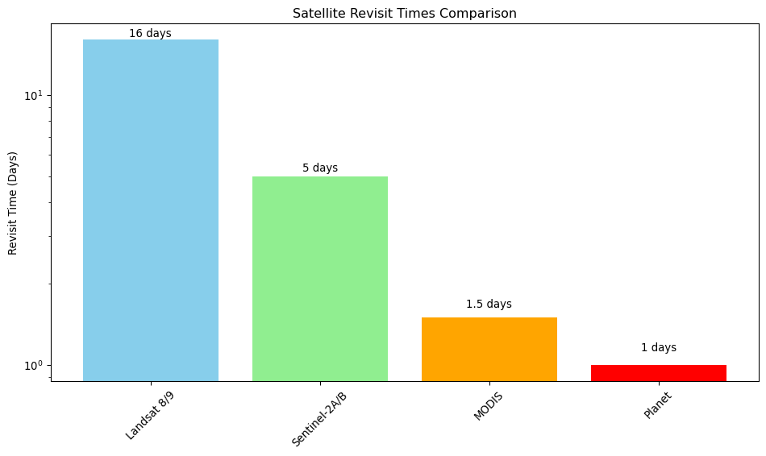

Working with satellite imagery and earth observation data
Introduction to Geospatial Data
Geospatial data forms the foundation of Earth observation and environmental monitoring. This cheatsheet covers key concepts for working with satellite imagery, coordinate systems, and remote sensing data.
import numpy as npimport matplotlib.pyplot as pltimport rasteriofrom rasterio.transform import from_boundsfrom rasterio.warp import reproject, Resamplingimport cartopy.crs as ccrsimport cartopy.feature as cfeatureimport pandas as pdfrom datetime import datetime, timedeltaprint(f"Rasterio version: {rasterio.__version__}")
Landsat 8/9 Bands:
Band 1: Coastal/Aerosol (0.43-0.45 μm) - Atmospheric correction
Band 2: Blue (0.45-0.51 μm) - Water mapping, soil/vegetation
Band 3: Green (0.53-0.59 μm) - Vegetation health, urban
Band 4: Red (0.64-0.67 μm) - Vegetation discrimination
Band 5: NIR (0.85-0.88 μm) - Vegetation analysis, water
Band 6: SWIR1 (1.57-1.65 μm) - Moisture, burn mapping
Band 7: SWIR2 (2.11-2.29 μm) - Geology, hydrothermal
Sentinel-2 Key Bands:
Band 2: Blue (0.49 μm, 10m)
Band 3: Green (0.56 μm, 10m)
Band 4: Red (0.665 μm, 10m)
Band 8: NIR (0.842 μm, 10m)
Band 11: SWIR1 (1.610 μm, 20m)
Band 12: SWIR2 (2.190 μm, 20m)
Satellite Orbits and Revisit Times
def satellite_orbit_comparison():"""Compare different satellite orbits and characteristics""" satellites = {'Landsat 8/9': {'orbit': 'Sun-synchronous polar','altitude': '705 km','revisit': '16 days','resolution': '15-30m','swath': '185 km','launch': '2013/2021' },'Sentinel-2A/B': {'orbit': 'Sun-synchronous polar','altitude': '786 km', 'revisit': '5 days (combined)','resolution': '10-60m','swath': '290 km','launch': '2015/2017' },'MODIS': {'orbit': 'Sun-synchronous polar','altitude': '705 km','revisit': '1-2 days','resolution': '250m-1km','swath': '2330 km','launch': '1999/2002' },'Planet': {'orbit': 'Sun-synchronous','altitude': '475 km','revisit': 'Daily','resolution': '3-5m','swath': '24 km','launch': '2016+' } }print("Satellite Comparison:")print("="*80)for sat, specs in satellites.items():print(f"\n{sat}:")for spec, value in specs.items():print(f" {spec.capitalize()}: {value}")# Visualize revisit times sat_names =list(satellites.keys()) revisit_days = [16, 5, 1.5, 1] # Approximate revisit times in days fig, ax = plt.subplots(figsize=(10, 6)) bars = ax.bar(sat_names, revisit_days, color=['skyblue', 'lightgreen', 'orange', 'red'])# Add value labels on barsfor bar, days inzip(bars, revisit_days): height = bar.get_height() ax.text(bar.get_x() + bar.get_width()/2., height +0.1,f'{days} days', ha='center', va='bottom') ax.set_ylabel('Revisit Time (Days)') ax.set_title('Satellite Revisit Times Comparison') ax.set_yscale('log') plt.xticks(rotation=45) plt.tight_layout() plt.show()satellite_orbit_comparison()
Satellite Comparison:
================================================================================
Landsat 8/9:
Orbit: Sun-synchronous polar
Altitude: 705 km
Revisit: 16 days
Resolution: 15-30m
Swath: 185 km
Launch: 2013/2021
Sentinel-2A/B:
Orbit: Sun-synchronous polar
Altitude: 786 km
Revisit: 5 days (combined)
Resolution: 10-60m
Swath: 290 km
Launch: 2015/2017
MODIS:
Orbit: Sun-synchronous polar
Altitude: 705 km
Revisit: 1-2 days
Resolution: 250m-1km
Swath: 2330 km
Launch: 1999/2002
Planet:
Orbit: Sun-synchronous
Altitude: 475 km
Revisit: Daily
Resolution: 3-5m
Swath: 24 km
Launch: 2016+

Coordinate Reference Systems
Understanding Projections
def demonstrate_coordinate_systems():"""Demonstrate different coordinate reference systems"""# Common coordinate systems crs_examples = {'Geographic (WGS84)': {'epsg': 4326,'type': 'Geographic','units': 'degrees','use_case': 'Global data, GPS coordinates' },'Web Mercator': {'epsg': 3857,'type': 'Projected','units': 'meters','use_case': 'Web mapping, Google Maps' },'UTM Zone 10N': {'epsg': 32610,'type': 'Projected','units': 'meters', 'use_case': 'Western US, accurate distance/area' },'Albers Equal Area': {'epsg': 5070,'type': 'Projected','units': 'meters','use_case': 'CONUS analysis, area preservation' } }print("Common Coordinate Reference Systems:")print("="*60)for crs_name, info in crs_examples.items():print(f"\n{crs_name} (EPSG:{info['epsg']}):")print(f" Type: {info['type']}")print(f" Units: {info['units']}")print(f" Use case: {info['use_case']}")# Demonstrate coordinate transformationdef transform_coordinates():"""Show coordinate transformation example"""# Sample point in San Francisco lon, lat =-122.4194, 37.7749# WGS84 geographic coordinatesprint(f"\nCoordinate Transformation Example:")print(f"Original (WGS84): Longitude = {lon}°, Latitude = {lat}°")# Mock transformation to UTM (simplified calculation)# In practice, use proper projection libraries like pyproj utm_x = (lon +180) *111320* np.cos(np.radians(lat)) utm_y = lat *110540print(f"Approximate UTM: X = {utm_x:.0f}m, Y = {utm_y:.0f}m")print("Note: Use pyproj or rasterio for accurate transformations") transform_coordinates()demonstrate_coordinate_systems()
Common Coordinate Reference Systems:
============================================================
Geographic (WGS84) (EPSG:4326):
Type: Geographic
Units: degrees
Use case: Global data, GPS coordinates
Web Mercator (EPSG:3857):
Type: Projected
Units: meters
Use case: Web mapping, Google Maps
UTM Zone 10N (EPSG:32610):
Type: Projected
Units: meters
Use case: Western US, accurate distance/area
Albers Equal Area (EPSG:5070):
Type: Projected
Units: meters
Use case: CONUS analysis, area preservation
Coordinate Transformation Example:
Original (WGS84): Longitude = -122.4194°, Latitude = 37.7749°
Approximate UTM: X = 5066513m, Y = 4175637m
Note: Use pyproj or rasterio for accurate transformations
Working with Geospatial Metadata
def create_sample_geospatial_metadata():"""Create and demonstrate geospatial metadata handling"""# Create sample raster with proper geospatial metadatadef create_sample_raster():"""Create a sample GeoTIFF with metadata"""# Sample data: synthetic NDVI-like values height, width =100, 100 data = np.random.beta(2, 2, (height, width)) *2-1# Values between -1 and 1# Define geospatial transform (San Francisco Bay Area) west, south, east, north =-122.5, 37.7, -122.3, 37.9 transform = from_bounds(west, south, east, north, width, height)# Define coordinate reference system crs ='EPSG:4326'# Metadata metadata = {'description': 'Synthetic NDVI data for demonstration','creation_date': datetime.now().isoformat(),'sensor': 'Simulated','processing_level': 'L2A','spatial_resolution': '30m','temporal_coverage': '2023-06-15' }return data, transform, crs, metadata# Create sample data ndvi_data, geotransform, crs, metadata = create_sample_raster()print("Geospatial Metadata Example:")print("="*40)print(f"Data shape: {ndvi_data.shape}")print(f"Data type: {ndvi_data.dtype}")print(f"Value range: [{ndvi_data.min():.3f}, {ndvi_data.max():.3f}]")print(f"CRS: {crs}")print(f"Geotransform: {geotransform}")print("\nMetadata:")for key, value in metadata.items():print(f" {key}: {value}")# Visualize with geographic context fig, (ax1, ax2) = plt.subplots(1, 2, figsize=(15, 6))# Raw data plot im1 = ax1.imshow(ndvi_data, cmap='RdYlGn', vmin=-1, vmax=1) ax1.set_title('NDVI Data (Array View)') ax1.set_xlabel('Column Index') ax1.set_ylabel('Row Index') plt.colorbar(im1, ax=ax1, label='NDVI')# Geographic context plot ax2 = plt.subplot(1, 2, 2, projection=ccrs.PlateCarree())# Calculate bounds from geotransform bounds = rasterio.transform.array_bounds(ndvi_data.shape[0], ndvi_data.shape[1], geotransform) west, south, east, north = bounds im2 = ax2.imshow(ndvi_data, extent=[west, east, south, north], transform=ccrs.PlateCarree(), cmap='RdYlGn', vmin=-1, vmax=1)# Add geographic features ax2.add_feature(cfeature.COASTLINE) ax2.add_feature(cfeature.BORDERS) ax2.set_extent([west-0.1, east+0.1, south-0.1, north+0.1])# Add gridlines ax2.gridlines(draw_labels=True) ax2.set_title('NDVI Data (Geographic View)') plt.colorbar(im2, ax=ax2, label='NDVI', shrink=0.6) plt.tight_layout() plt.show()return ndvi_data, geotransform, crs, metadatasample_data, transform, crs, metadata = create_sample_geospatial_metadata()
Geospatial Metadata Example:
========================================
Data shape: (100, 100)
Data type: float64
Value range: [-0.997, 0.981]
CRS: EPSG:4326
Geotransform: | 0.00, 0.00,-122.50|
| 0.00,-0.00, 37.90|
| 0.00, 0.00, 1.00|
Metadata:
description: Synthetic NDVI data for demonstration
creation_date: 2025-08-12T19:01:12.068475
sensor: Simulated
processing_level: L2A
spatial_resolution: 30m
temporal_coverage: 2023-06-15
/Users/kellycaylor/mambaforge/envs/geoAI/lib/python3.11/site-packages/shapely/creation.py:730: RuntimeWarning:
invalid value encountered in create_collection
/Users/kellycaylor/mambaforge/envs/geoAI/lib/python3.11/site-packages/shapely/creation.py:730: RuntimeWarning:
invalid value encountered in create_collection